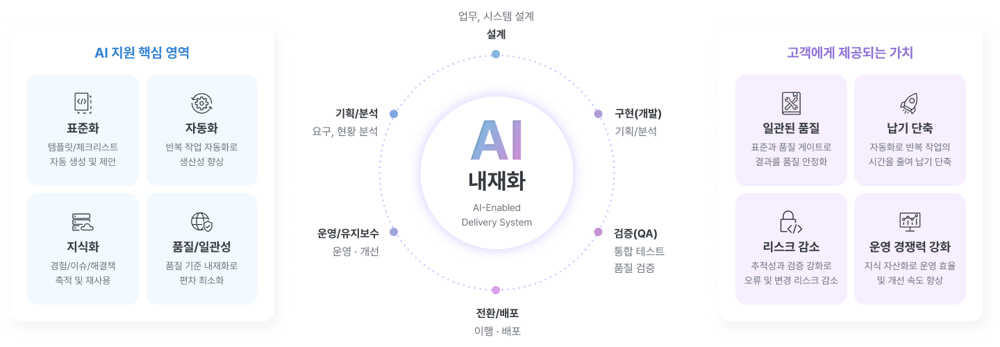
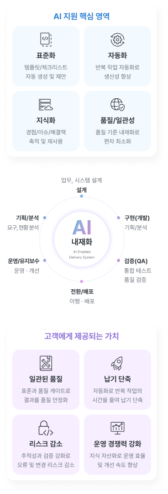
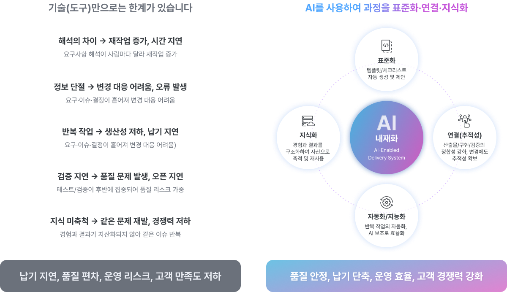
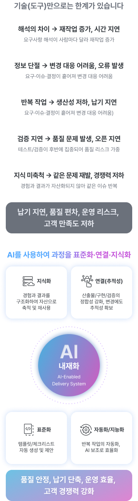
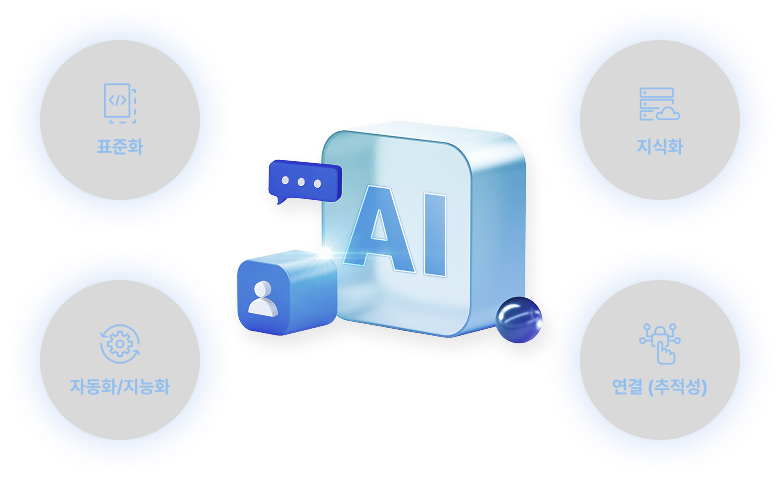
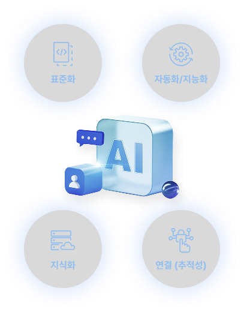

-
AI Use Cases
-
성공적인 AI 도입은 기술이 아닌 활용 방식에서 시작됩니다.
조직에 최적화된 AI 솔루션으로 지속 가능한 운영 혁신을 지원합니다.
AI-Enabled Delivery System
AI 내재화
SI 수행 전 과정의 표준화, 품질 게이트, 추적성, 지식화를 강화하여
안정적인 납기와 일관된 품질을 지원하는 내부 운영 체계입니다.


AI를 내재화해 표준화·자동화·지식화 기반의
생산성과 품질 안정성을 강화합니다.
AI 내재화 원칙
SBM은 채널/클라이언트(웹·앱·키오스크·디바이스·클라이언트 앱)와 백엔드 서비스/기능
서비스/외부 연계 사이에 위치합니다.

AI 내재화 = 기술이 아닌 ‘일하는 방식’의 혁신,
OPENBRICKS는 사람과 AI가 함께, 표준과 데이터로 연결된
수행체계를 만들어 고객의 성공을 가속화합니다.
-
01
Human-in-the-loop AI는 초안/보조 역할이며, 승인과 책임은 사람에게 있습니다.
-
02
Standard-first AI는 개인 도구가 아니라 표준 템플릿·규칙·게이트에 결합되어 조직 단위로 적용됩니다.
-
03
Traceability 산출물–코드–테스트–전환이 연결되어 변경에도 흔들리지 않는 추적성을 확보합니다.
-
04
Measured improvement 도입은 이벤트가 아니라, 병목 구간의 전/후 지표로 개선 효과를 관리합니다.
-
05
Security by design 폐쇄망/온프레미스 등 제약을 전제로 현장 적용 가능한 방식으로 설계합니다.
AI-Native
기술 도입을 넘어, AI 내재화로
품질과 운영 체계를 혁신합니다.
OPENBRICKS는 AI를 단순한 개발 도구가 아닌, 표준과 품질 통제를 일관되게 적용하는 수행 체계로 내재화합니다.
오픈 직전 집중 검증, 변경 이력 분산, 반복 이슈 재발은 결국 납기와 품질 리스크로 이어집니다.


AI를 내재화해 표준화·자동화·지식화 기반의
생산성과 품질 안정성을 강화합니다.
AI 내재화 적용 방식
AI 내재화는 ‘전면 도입’이 아니라 ‘병목부터’가 정답입니다. 폐쇄망/온프레미스 환경 등
프로젝트 제약을 고려해, 데이터 범위와 운영 정책을 명확히 해야 실제 현장에 안착합니다.
OPENBRICKS의 목표는 “AI 도입”이 아니라 운영 가능한
체계 정착과 결과물 품질의 일관성입니다.
-
01
프로젝트 전면 도입이 아니라 병목 구간부터 단계적으로 적용
-
02
표준/게이트가 먼저, 그 다음 도구 적용 (순서 고정)
-
03
폐쇄망/온프레미스 환경에서는 데이터 범위/정책을 명확히 하고 적용
-
04
목표는 문서가 아니라 운영 가능한 체계 정착과 결과물 품질의 일관성
AI 내재화 구성 4축
AI는 강력하지만, 원칙 없이 쓰면 품질을 높이는 대신 리스크를 키울 수 있습니다.
표준 → 품질 게이트 → 추적성 → 지식화 선순환으로 시간이 지날수록 더 강한 수행체계를 완성합니다.
AI for Stable Systems
OPENBRICKS의 혁신은 AI 제품 판매가 아닌,
SI 수행체계의 고도화입니다.
코딩·리뷰·테스트·증적 반복 작업을 줄여 품질 활동에 집중하고,
운영 이력과 결과물을 자산화해 더 안정적인 수행 체계를 만듭니다.
AI 제품 판매가 아닌, 납품 품질과 운영 안정성 강화를 위한 AI 내재화입니다.


코딩·리뷰·테스트·증적의 반복 작업을 줄여
품질 활동에 집중하고, 운영 이력과 결과물을 자산화해
지속 가능한 운영 안정성을 만듭니다.
AI 내재화 기대 효과
납기·품질 편차 감소로 운영 리스크는 낮아지고, 변경 대응이 빨라지며, 재작업이 감소합니다.

AI 내재화의 핵심 가치는
‘더 빨리’가 아니라 ‘더 안정적으로’입니다.
-
01
표준과 게이트로 납기/품질 편차 감소
-
02
추적성과 지식화로 변경 대응력 향상 + 재작업 감소
-
03
결과물이 자산으로 축적되어 유사 프로젝트 속도/품질 동시 개선
-
04
결과적으로 SI 수행과 운영 대응에 소모되는 시간을 줄여, 핵심 업무 집중과 기업 경쟁력 강화를 지원
Beyond Systems,
We Connect Business
오픈브릭스는 AX 기반 시스템 통합으로
시스템을 넘어, 비즈니스를 연결합니다.